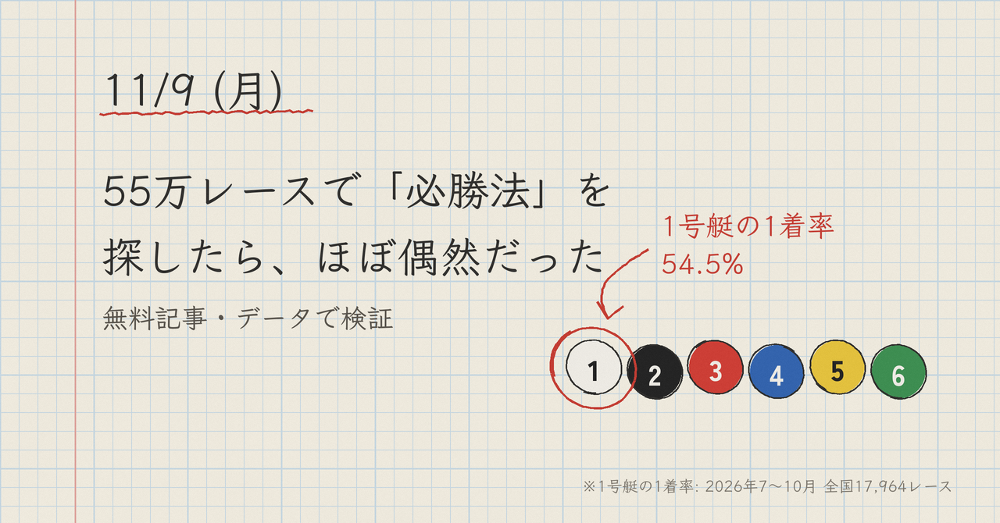

ボートレースの買い方で「この条件なら儲かる」という話をよく見かけます。本当にそうなのか、1997年からの公式記録を全部データベースに入れて確かめました。
結論から書くと、条件と買い目の組み合わせで見つかる「回収率100%超えの買い方」は、ほぼすべて偶然でした。長い期間で100%を超え続けたのは、たった1つの買い方だけです。この記事は無料で全部読めます。
ボートレースは、売上の約25%が主催者の取り分です。何も考えずに買い続けると、回収率は約75%に近づきます。「回収率100%超え」は、この25%の差を毎回取り返すということです。
券種7種類（単勝・複勝・2連単・2連複・拡連複・3連単・3連複）の枠の組み合わせ212通りと、買う前にわかる条件465通り（場・レース番号・風・波・級別・モーターの順位など）を、2010〜2026年の約92万レースで総当たりしました。
まず2010〜2019年で回収率100%を超えた組み合わせを集めると、25,930通り見つかりました。ここで、条件を年ごとにでたらめに入れ替えた「偽の条件」でも同じことをすると、約24,000通り見つかります。本物の条件とほとんど変わりません。
生き残った組み合わせのほとんどは3連単の高配当で、たまたま当たった数本が回収率を押し上げていただけでした。「この場のこの条件は儲かる」という話の多くは、これと同じしくみだと考えています。
もう1つわかったのは、同じ券種の中では、的中率を上げるほど回収率が下がることです。点数を増やせば的中率はいくらでも上がります（3連単120点買いなら100%）。でも回収率は62%まで落ちます。「的中率○%」だけを見せる予想には注意が必要です。
長い期間で100%を超え続けたのは、次の買い方だけでした。
1. 統計モデルで、各艇が1着になる確率を出す
2. 別のモデルで、その艇の単勝オッズがいくらになるかを予想する
3. 確率 × 予想オッズ（期待値）が1を超える艇の単勝だけ買う
人気と実力のずれを拾う買い方です。たとえば勝つ確率30%の艇のオッズが4倍なら、期待値は1.2で「買い」です。
この買い方を、「その年より前のデータだけで学習したモデル」で過去10年（2016年10月〜2026年10月、550,715レース）予想し直しました。結果は回収率107.5%で、11年すべての年で100%を超えました（一番低い年で101.9%）。
ただし、95%の信頼区間の下限は100%前後で、「確実に勝てる」とまでは言えません。月ごとには85%〜115%と大きく上下します。
検証は過去のデータです。そこで2026年10月26日から、レースの前日に予想を公開して、実際の成績を記録しています。
まだ点数が少ないので、これから数か月で検証の数字に近づくかを見ていきます。結果は毎日、外れも含めて報告します。
この買い方の毎日の買い目（単勝の買い目と、本命が堅いレース）は、前日17時ごろに有料記事（300円）で公開しています。X（@BoatRace__B）では、毎日その中から1点を無料で出し、前日の結果を報告しています。
数字は過去の結果で、これからの的中や回収率を約束するものではありません。舟券の購入は20歳からです。無理のない金額で、ご自身の判断でお楽しみください。